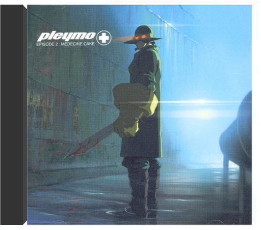

Le disque qui enterre le rock 80’s sagement calibré et annonce ce que sera le futur de cette musique de jeunes Blancs : audacieusement déstructuré mais hautement fredonnable. Produit par Steve Albini (Big Black), Surfer Rosa marie la sauvagerie du punk-rock aux rondeurs de la pop la plus mélodique, fidèle au précepte grand écart que le groupe de Boston s’est imposé, quelque part entre Peter, Paul & Mary et Hüsker Dü. Ce CD réunit en fait le premier vrai album du groupe (Surfer Rosa, 1988) et le mini-album qui l’avait précédé (Come On Pilgrim, 1987), composé de huit chansons dans lesquelles le style très particulier des Lutins commence à s’esquisser. Cavalcades effrénées, lévitations sur planches de surf volantes, paroles énigmatiques sous influence surréaliste et parfum post-New Wave (Boston est la ville américaine la plus anglaise, a-t-on coutume de dire) : Black Francis, rebaptisé plus tard Frank Black, et ses trois artificiers ne connaissent aucune limite. L’avenir leur donnera raison. —José Guerreiro  Stripped-back 2015 live set performing their best-loved songs with guests Broken Twin & Joan Wasser aka Joan As Police Woman.  épisode 2 : medecine cakepleymo C'est autour de goûts en commun que les membres de ce groupe de Fontainebleau se sont retrouvés. Des choses globalement hard et heavy, classiques même, qui vont de Soundgarden à Smashing Pumpkins en passant par Faith No More et Rage Against The Machine. Autant le dire tout de go : Episode 2 : Medecine Cake secoue sévèrement, ses morceaux puissamment charpentés puisant également aux sources du rap hardcore et du death. Soit du néo-metal que l'on aura tout loisir de comparer aux grands frères de Slipknot et Linkin Park ! Que du bon donc, superbement produit par Fabrice Leyni (NTM), avec des guests efficaces pêchés du côté de l'alternatif hexagonal le plus pointu (Wünjo, Watcha et Stereotypical Working Class). "Tank Club" installe d'emblée une ambiance lourde garnie de samples digérés par des machines à la hauteur du débit de Mark Kemar, leur (d)étonnant chanteur (la voix est quasiment envisagée comme un instrument à part entière). Tonitruant, "United Nowhere" montre la marche à suivre et prouve que Pleymo n'a d'ores et déjà plus grand-chose, sinon rien, à envier aux meilleurs groupes de fusion, qu'il s'agisse de Primus ou de Korn. Rythmiques d'enfer, riffs plombés et énergie colossale : une recette simple comme bonjour dont ils sont à la hauteur ! —Hervé Comte |  À la différence du précédent, Medecine Cake, sorti deux ans auparavant, Rock, malgré la simplicité accrocheuse de son titre, se révèle plus ambitieux car il suit un concept (plus ou moins vague) illustré par la pochette. Dans la mouvance de Enhancer ou Aqme, Pleymo n'oublie jamais l'efficacité, désormais redoutable. Sont abandonnés les tempos musclés qui fusionnaient autrefois le rap et le metal au profit d'une musique essentiellement tournée vers des riffs plus classiquement hard dont certains des plus marquants sont concentrés sur "Divine Excuse". Rock, produit par Pleymo de A à Z, ravira les amateurs du genre et du groupe. —Hervé Comte  B000024JDX  Pulp Fiction, le film, fut un succès délirant. Celui de sa bande originale y contribua-t-il ou n'en fut-il qu'une conséquence ? Indissociables l'un de l'autre, Pulp Fiction la B.O. suit fidèlement le film et vice-versa, gangsters, petits truands et filles présents en esprit dans chaque chanson. Quentin Tarantino, se servant de sa B.O. comme d'un médium, exhume notamment un genre bien négligé depuis les années cinquante, la musique surf ("Misirlou" de Dick Dale – même repris depuis chez Taxi 2 – ou les morceaux des oubliés Tornadoes, Lively One, Centurians, Revels et autres obscurs combos surf). Tarantino mêle à cela des dialogues devenus cultes extraits du film et quelques vieux tubes plus ou moins disparus des ondes, de la ballade nostalgique de Ricky Nelson, "Lonesome Town", au funk délirant de Kool & The Gang, de la sensualité d'Al Green au sublime "Son Of A Preacher Man" de Dusty Springfield. Et couronnant tout cela, le frénétique "You Never Can Tell" de Chuck Berry (dorénavant à l'honneur dans n'importe quelle fête depuis ce duo de danse endiablé entre Uma Thurman et John Travolta) ou l'imparable reprise de Neil Diamond par Urge Overkill "Girl, You'll Be A Woman Soon" font de cette B.O. la bande-son idéale pour rouler le long de la côte californienne, la fenêtre de la Buick grande ouverte. —Anne-Claire Norot |

Julien
Collection Total:
2 100 Items
2 100 Items
Last Updated:
Feb 15, 2025
Feb 15, 2025


 Made with Delicious Library
Made with Delicious Library